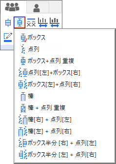
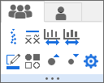

FAQ-1047 ボックスチャートでデータポイントを表示・編集する方法は？
data-point-box-chart
最終更新日：2020/03/16
ボックスチャートでビン化されたデータを表示する方法
- ボックスチャートをダブルクリックして作図の詳細ダイアログを開きます。
- ボックスチャートタブの種類ドロップダウンリストで次のいずれかを選択します：点列、ボックス + 点列重複、点列（左） + ボックス（右）、ボックス（左） + 点列（右）、棒 + 点列重複、棒（右） + 点列（左）、棒（左） + 点列（右）、ボックス半分（右） + 点列（左）またはボックス半分（左） + 点列（右））
または、
- ボックスチャートをクリックして、ミニツールバーを開きます。
- ボックスの種類ボタンをクリックして点列つきのオプションを選択します。
- 
ボックスチャートのデータポイントを編集する方法
- ボックスチャートをダブルクリックして作図の詳細ダイアログを開きます。
- シンボルタブでデータポイントのフォーマットを編集します。
上記の手順でボックスチャートの種類を点列にしたときは、ミニツールバーで編集することもできます。
- ボックスチャートをクリックして、ミニツールバーを開きます。
- ミニツールバーで、境界色、塗り色、シンボルの形状、シンボルサイズを大きく、シンボルサイズを小さくボタンを使用してデータポイントのフォーマットを編集します。
- 
キーワード:プロット, ボックスチャート, データポイント, ミニツールバー